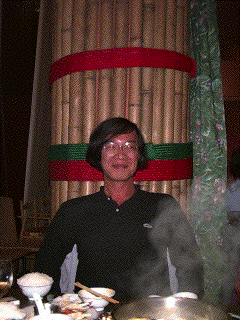

1995年3月30日 Quixote Last Party にて
Kazumasa Yokota, ``What is Expected of an Object-Oriented Data Model?'', Proc. IFIP 11th World Computer Congress (IFIP'89), San Francisco, USA, Aug.28-Sep.1, 1989. Kazumasa Yokota, ``Outline of a Deductive and Object-Oriented Language Juan'', 情報処理学会データベースシステム&電子情報通信学会データ工学合同研究会, July, 1990.
Kazumasa Yokota, Hiroshi Tsuda, and Yukihiro Morita, ``Specific Features of a Deductive Object-Oriented Database Language Quixote'', Proc. ACM SIGMOD Workshop on Combining Declarative and Object-Oriented Databases (SIGMOD'93 WCDOOD), Washington DC, USA, May 29, 1993. Kazumasa Yokota, Toshihiro Nishioka, Hiroshi Tsuda, and Satoshi Tojo, ``Query Processing for Partial Information Databases in Quixote'', 6th IEEE International Conference on Tools with Artificial Intelligence (TAI'94), New Orleans, Nov. 6-9, 1994.
横田一正, ``演繹オブジェクト指向データベース Quixote の法的推論への応用'', 人工知能学会誌, vol.10, no.1, 1995. Chie Takahashi and Kazumasa Yokota, ``Constructing a Legal Database on Quixote'', Proc. the Sixth Australasian Database Conference (ADC'95), Adelaide, Australia, Jan. 30,31, 1995.
Kazumasa Yokota and Hideki Yasukawa, ``Towards an Integrated Knowledge-Base Management System --- Overview of R&D on Databases and Knowledge-Bases in the FGCS Project'', Proc. Int. Conf. on Fifth Generation Computer Systems (FGCS'92), Tokyo, June 1-5, 1992. Kazumasa Yokota, ``From Databases to Knowledge-Bases --- Kappa, Quixote, Helios'', Proc. Int. Symp. on Fifth Generation Computer Systems (FGCS'94), Tokyo, Dec. 13,14, 1994.
横田一正, ``演繹オブジェクト指向データベースについて'', コンピュータソフトウェア, vol.5, no.4, 1992. 横田一正, 宮崎収兄, 新データベース論 --- 関係から演繹・オブジェクト指向へ, 共立出版, 1994.
廣瀬健, 横田一正, ``証明とコンピュータ --- 数学する人々のよき助手としての自動検証系の試み'', 数学セミナー, 10月号, 1986.
Kazumasa Yokota, Moto Kawamura, and Atsusi Kanaegami, ``Overview of the Knowledge Base Management System (KAPPA)'', Proc. Int. Conf. on Fifth Generation Computer Systems (FGCS'88), Tokyo, Nov.28-Dec.2, 1988.
Kazumasa Yokota, ``Deductive Approach for Nested Relations'', Programming of Future Generation Computers II, eds. by K. Fuchi and L. Kott, North-Holland, 1988
Nobuyoshi Miyazaki, Kazumasa Yokota, Hiromi Haniuda, and Hidenori Itoh, ``Horn Clause Transformation by Restrictor in Deductive Databases'', J. of Information Processing, vol.12, no.3, 1989.
Kazumasa Yokota and Akira Aiba, ``A New Framework of Very Large Knowledge Bases'', Knowledge Building and Knowledge Sharing, eds. by K. Fuchi and T. Yokoi, Ohmsha and IOS Press, 1994. Akira Aiba, Kazumasa Yokota, and Hiroshi Tsuda, ``Heterogeneous Distributed Cooperative Problem Solving System Helios and Its Cooperation Mechanisms" Proc. FGCS'94 Workshop on Heterogeneous Cooperative Knowledge-Bases, Dec. 15,16, 1994.
横田一正, 谷園子 ``電子メーリングリスト dbjapan の発展経過と今後の展望'', データベース、関西データベース協議会, 3月, 1995.